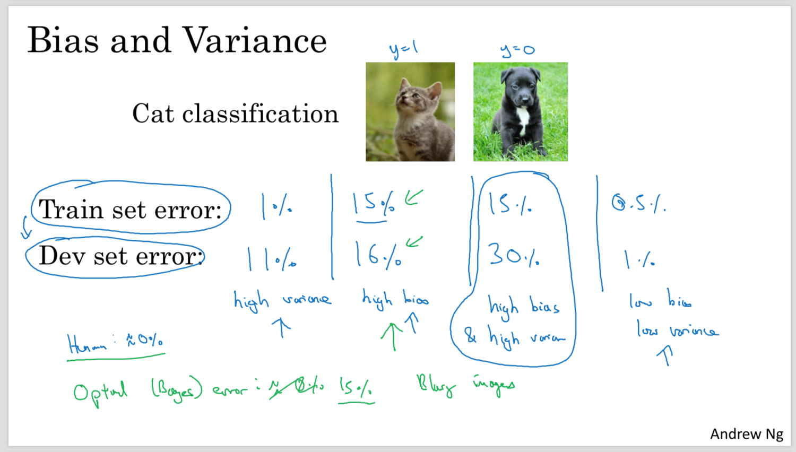
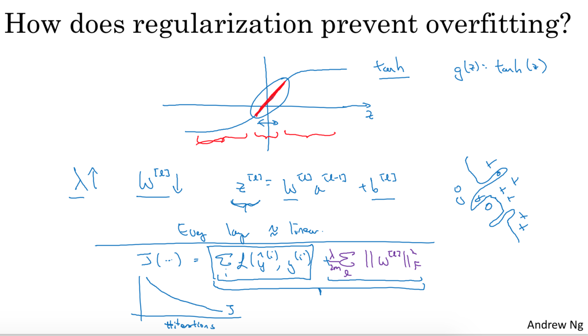
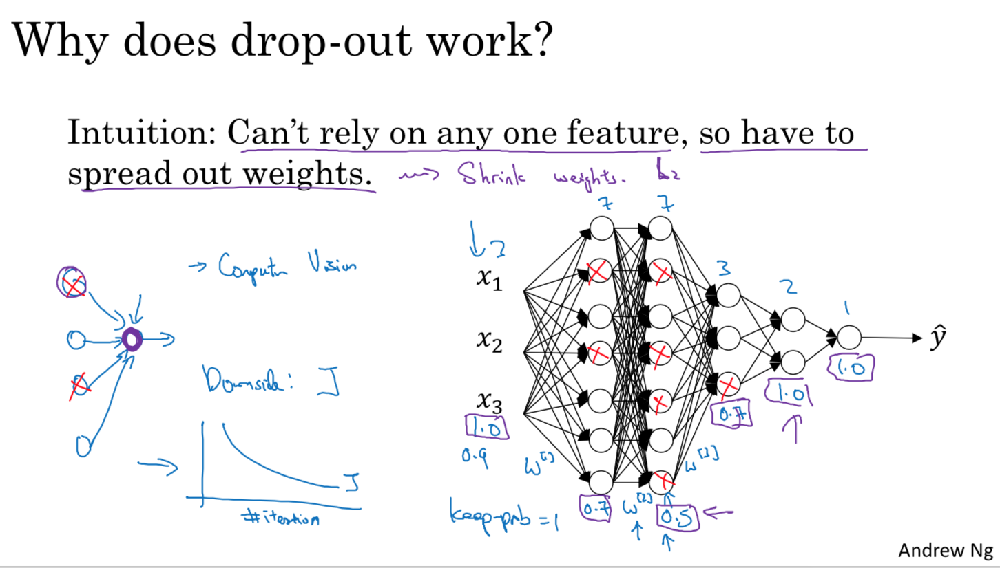
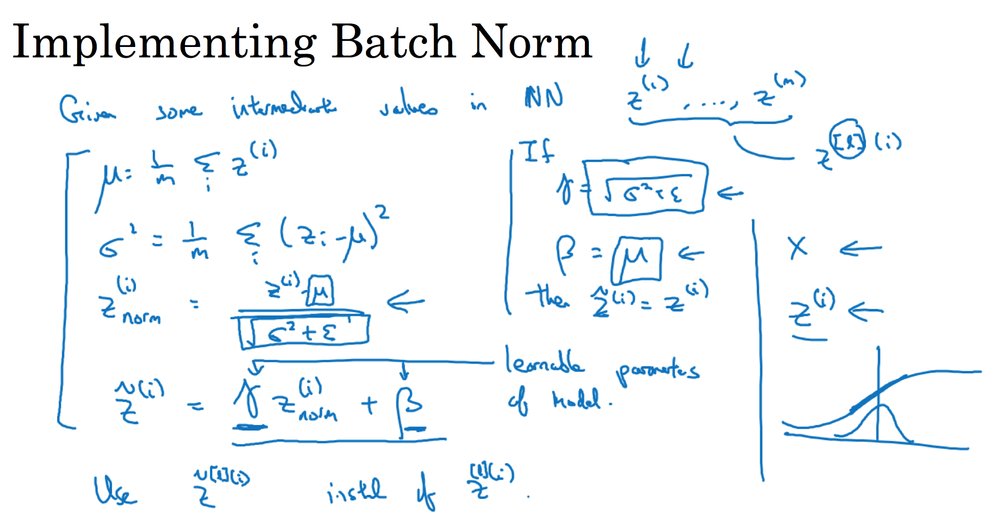
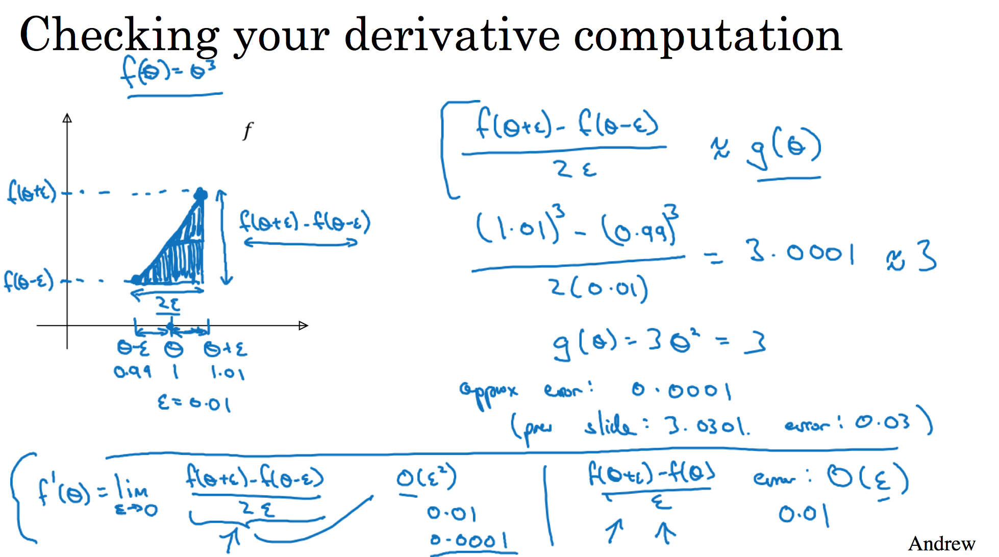

Improving Deep Neural Networks: Hyperparameter tuning, Regularization and Optimization
Table of Contents
突然发现，7天免费尝试，是针对于specilization而不是针对单独course的，所以赶紧突击这门 课程 。
这门课程主要将的是如何优化深度神经网络，包括如何调参，如何减少bias/variance，如何更好地优化缩短训练时间等等。按照这么课程标题划分的话包括三个部分：超参数微调，正则化和优化。
1 Bias/Variance
bias强调的是，训练得到的准确率(train error), 和最优准确率(optimal error/bayes error/human level error)，之间的差距。如果这个差距过大的话，那么称为high bias.
high bias意味着训练算法得到的是underfit的结果，需要使用更复杂的模型来提高准确率。
variance强调的是，训练准确率(train error)和测试准确率(dev/test error)，之间的差距。如果这个差距过大的话，那么称为high variance.
high variance意味着训练算法得到的是overfit的结果，需要使用更加简单的模型或者是正则化(regularization)来减少variance.

通常来说应该先尽可能低减少bias, 然后再来减少variance.
2 Regularization
Regularization的最终作用，就是让模型尽可能地简单。
正则化主要有两个方式：L2范式和Dropout. 除此之外还有Data Augmentation和Early Stopping. 数据扩充是一个好办法，但是并不是在所有情况下都可以使用。Early Stopping在工程中会经常使用，但是它的orthgonization（正交性）比较差，会同时影响train/dev阶段，所以比较难以把握。
L2范式要求每个weight尽可能地小，在计算dW的时候，原先是W -= alpha * dW, 但是增加了L2之后 W = (1-alpha * lambd / m) * W - alpha * dW. 可以看到W首先变成了原先的(1-alpha * lambd /m). 可以看到，W的值在每次迭代的时候都在尽可能地缩减(weight decay).
W越小，会让模型更加简单，有一个可能的解释如下. 就是让W越接近于0的时候，在sigmoid/relu/tanh这些非线性函数上，更接近于线性函数。可以想象，如果NN上面所有的非线性函数都退化成为线性函数的话，那么整个模型其实是一个线性模型。

Dropout可以让在一个layers上，某些neuron可以尽可能地不依赖于其他neuros, 可以获得更好的generalization. Dropout在实现上需要区分train/dev/test阶段，在train阶段需要打开，而在dev/test阶段则关闭。并且具体地 D[l] = A[l] * mask. 其中mask = (rand() < p) / p(这里/p是为了等比例扩展其他neuron的权重）。推导可以得到dA = dD * mask. Dropout和Gradient Check放在一起比较难写对。

3 Batch Normalization
BN是在一个mini-batch上面对输入进行normalization，并且这个BN是作用在每一个layer上面的，每个layer上面都会有两个参数gamma, beta.

BN在每层有两个超参数，并且最终训练完成之后也有两个参数分别是u(mean), e(std). 这两个参数会作用在预测上。如何在train阶段结合mini-batch来计算u和e呢？这个可以参考 Optimization 一节里面 `expoentially weighted average(ewa)`的计算方法：在计算mini-batch的时候每次都会得到一个u和e, 然后通过ewa最终得到最终值，这个最终值可以在一定程度上认为是每个mini-batch的平均值。
4 Hyperparameter Tunning
超参数(hyper-param)和普通参数(param)的区别是，普通参数是我们希望最终得到的，而超参数是为了更好地获得这些参数使用的参数。
选择超参的时候，最需要关注的是超参有效范围以及分布比例。如果分布是对数比例分布的话，那需要做对数处理。下面两个例子：
- a = [0.001, 1]，那么可以使用 10 ** rand(-3, 0)
- a = [0.9, 0.9999], 那么 1-a = [0.0001, 0.1], 可以使用 1 - 10 ** rand(-4, -1)
5 Optimization
TODO: ewa, momentum, rmsprop, adam.
6 Gradient Check
优化阶段为了证明BP写正确了，最好做梯度检查(gradient checking). 梯度有两种方法可以求解：
- dw = f(w+e) - f(w) / e.
- dw = f(w+e) - f(w-e) / 2e.
我们应该尽可能地用第二种方法，这个可以根据泰勒级数展开证明，第二种办法的误差是O(e**2)级别的，而第一种办法是O(e)级别的。

7 Multiclass
如何处理多分类:
- 多分类的输出使用softmax yi = e^zi / sum{i=1..C}(e^zi)
- 多分类的cost function L = -sum{i=1..C}(yi * log(yi'))
- 其中C表示分类的数量
- dL/dz = -y(1-y')